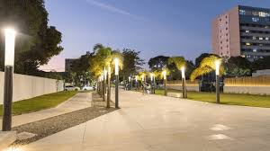
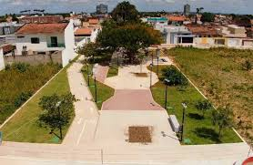
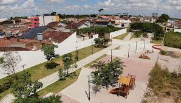

Foram colocadas no ambiente, árvores nativas e plantas ornamentais que criaram uma bela paisagem para visitação de adultos e crianças – há parquinhos espalhados pela extensão – e caminhadas ao ar livre. Mesmo em pleno centro comercial de Arapiraca, o lugar transmite uma sensação de que se está no campo, a perceber-se a presença de saguis (pequenos macacos) e pássaros silvestres nos galhos das árvores. O local dispõe de guardas municipais que o mantém seguro e é perto de vários outros empreendimentos de diferentes ramos.
  